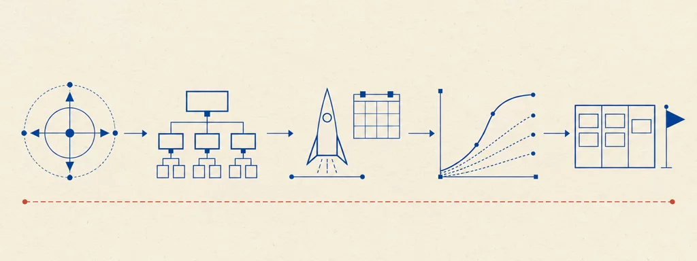

University of Bologna — C.d.S. Ingegneria e Scienze Informatiche · Prof. Marco A. Boschetti · A.A. 2025/2026 · Project Management 2026
Project Management
19 capitoli80 widget interattivi77 tavole~13 ore di studio

Tavola 00 — La strada del corso. I fondamenti (cap. 1–4), i processi e l'avvio con lo scoping e il planning (cap. 5–11), il launching (cap. 12–15), il monitoring & controlling e il closing (cap. 16–17), e la chiusura del corpus: Kanban, DevOps e il caso di studio con le esercitazioni (cap. 18–19).
Come studiare
I capitoli sono in ordine di studio: seguono la sequenza dei process group — scoping/initiating, planning, launching/execution, monitoring & controlling, closing — con i fondamenti all'inizio e il caso di studio alla fine. Ogni capitolo consolida in un solo posto quello che le slide dicono su un argomento.
Le tavole sono diagrammi tecnici d'archivio ricostruiti dalle slide: leggetele come figure, non come decorazione. I widget (simulatori, classificatori, calcolatori, state explorer, stepper) sono implementazioni dei meccanismi del corso — usateli attivamente, in particolare il calcolatore EVA del capitolo 16 e il simulatore della kanban board del capitolo 18.
Ogni capitolo termina con «Verifica le tue conoscenze»: domande in stile esame con risposte collassabili nella formulazione esatta del corso. Il caso di studio PDQ (capitolo 19) è il banco di prova: gli esercizi chiedono di applicare i modelli PMLC del capitolo 4 ai sei sottosistemi.
L'elaborato d'esame (capitolo 19, sezione 5) chiede di documentare tutte le fasi: scoping, planning, launching, monitoring & controlling e closing. La mappa di ripasso del capitolo 19 collega ogni fase ai capitoli corrispondenti. Ogni piè di pagina elenca la fonte da cui deriva il capitolo; le fonti sono le slide ufficiali del corso, non ridistribuite.